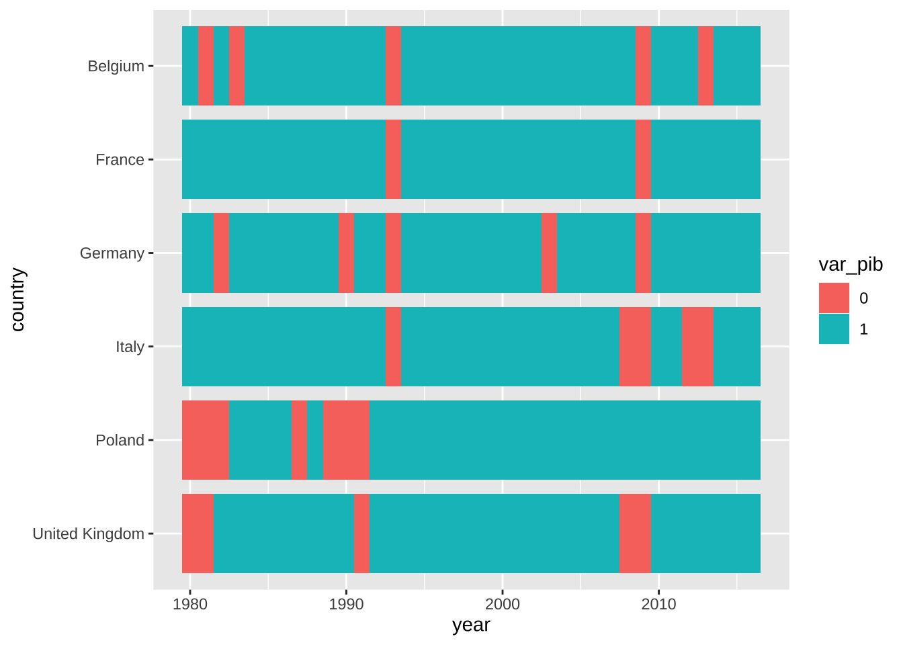
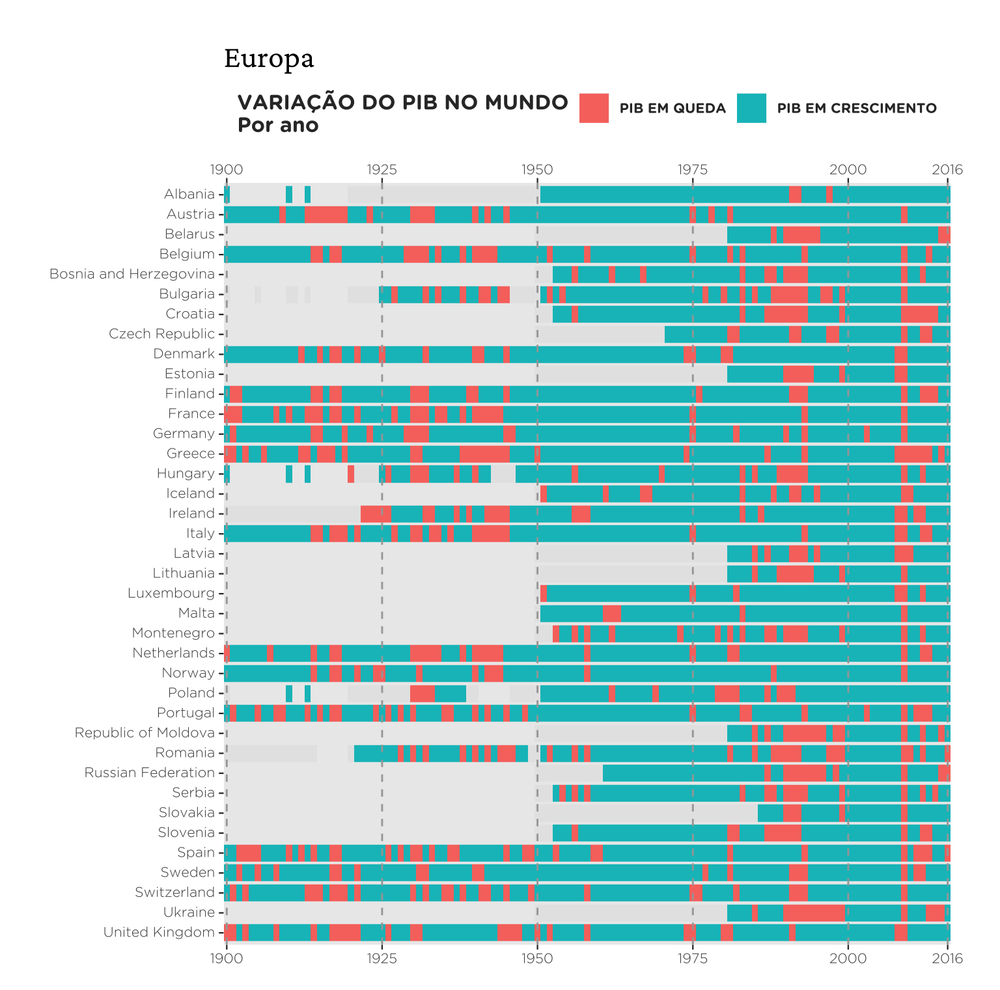
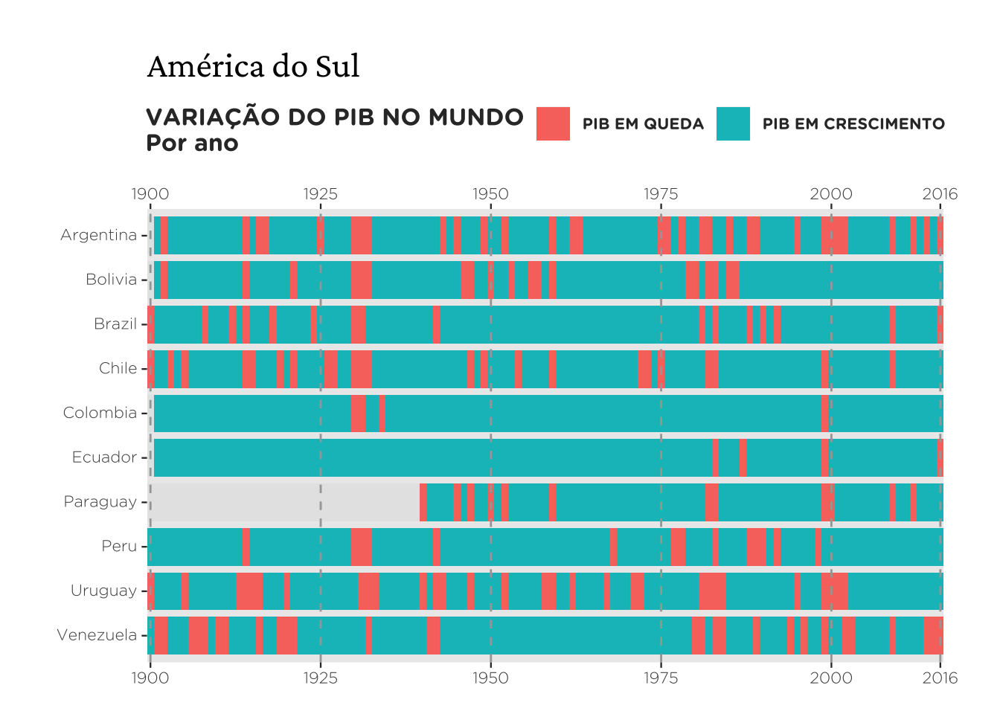
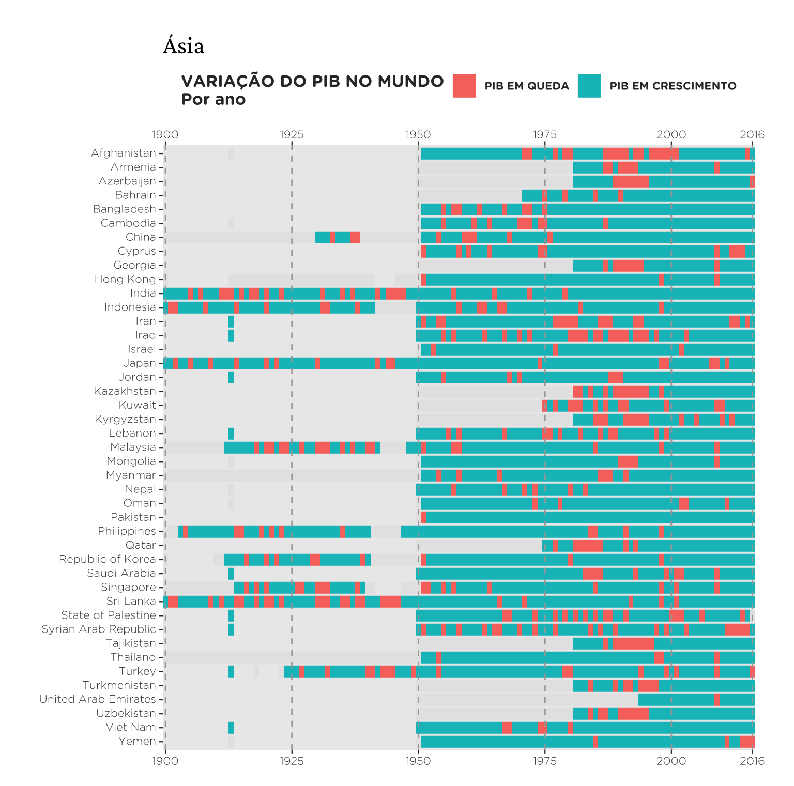
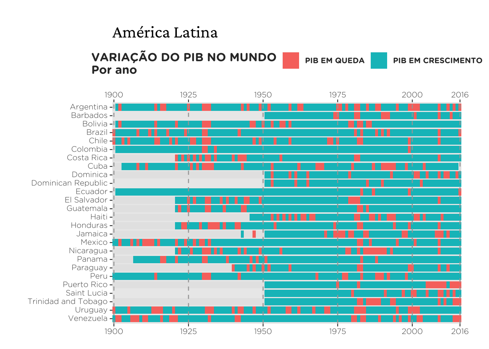
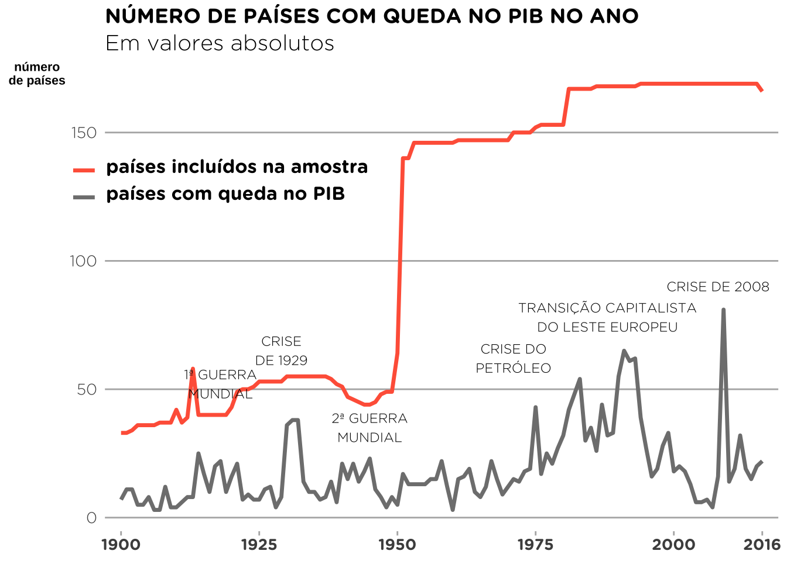
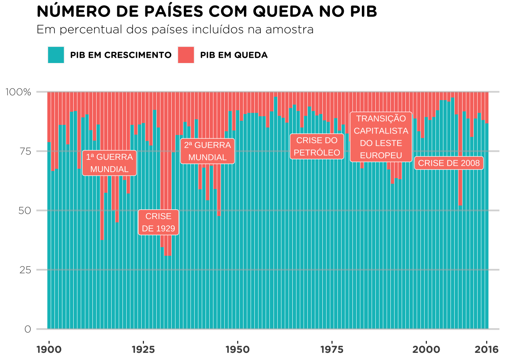
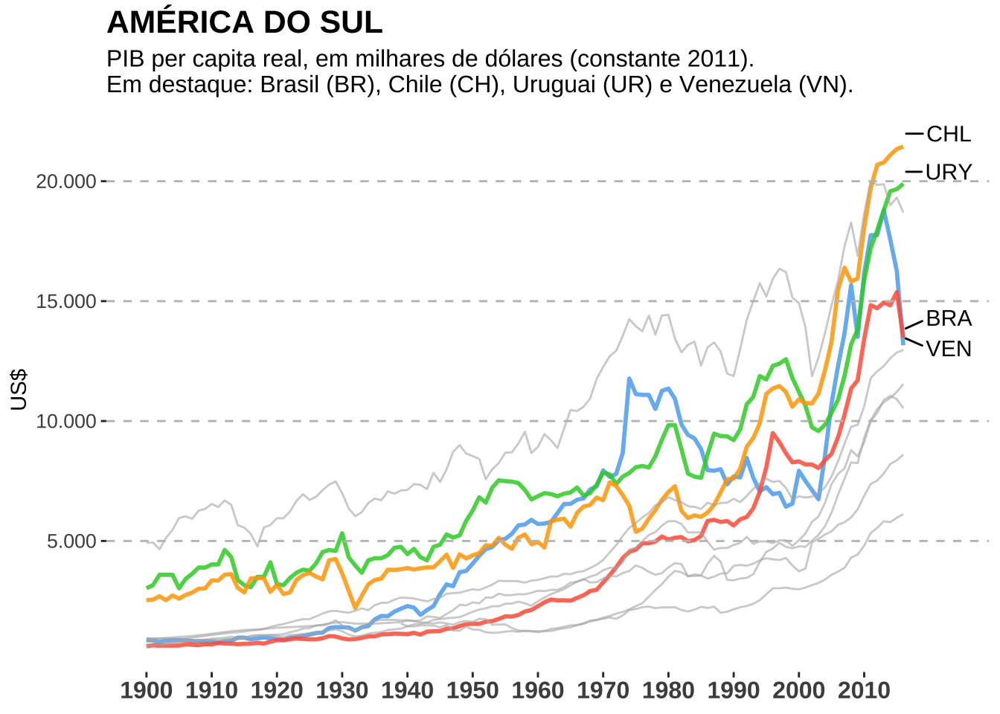

Introdução
Como desafio pessoal às vezes tento replicar gráficos que acho interessante. O portal Nexo, em particular, costuma ter lindas visualizações de dados. Vou tentar replicar os gráficos desta publicação. Como o foco desta postagem está na visualização e em mostrar exemplos de aplicações do ggplot2 vou omitir as (longas) manipulações de dados, deixando indicadas as fontes (com links) que usei. Numa postagem futura pretendo fazer um tutorial mais detalhado de como reproduzir estes gráficos.
Pacotes
Code
library("readxl")
library("here")
library("ggplot2")
library("ggrepel")
library("dplyr")
library("reshape2")
library("kableExtra")Dados
Dados são do Maddison Project Database, disponíveis aqui
| País | Ano | Região | PIB | Crescimento |
|---|---|---|---|---|
| Angola | 2005 | Africa | 66351984 | 1 |
| Angola | 2011 | Africa | 123013536 | 1 |
| Albania | 2005 | Europe | 21452400 | 1 |
| Albania | 2006 | Europe | 22717995 | 1 |
| Albania | 2007 | Europe | 24080895 | 1 |
| Albania | 2008 | Europe | 25890410 | 1 |
| Albania | 2009 | Europe | 26754552 | 1 |
| Albania | 2010 | Europe | 27741824 | 1 |
| Albania | 2011 | Europe | 28452000 | 1 |
| Albania | 2012 | Europe | 28852736 | 1 |
Europa
Neste primeiro gráfico cada quadradinho representa uma variável binária que indica se o país estava em expansão ou recessão. Mapeio esta variável usando o geom_tile e depois ajusto o tamanho dos quadradinhos. Para dar um pouco da intuição do processo vale começar com uma versão simplificada do problema.
Queremos mapear a cada ano se um país está ou não em recessão. A tabela abaixo reúne esta informação para seis países (Alemanha, Bélgica, França, Itália, Polônia e Reino Unido) desde 1980. É um pequeno recorte da nossa base original.
| year | country | var_pib |
|---|---|---|
| 1980 | Belgium | 1 |
| 1980 | Germany | 1 |
| 1980 | France | 1 |
| 1980 | United Kingdom | 0 |
| 1980 | Italy | 1 |
| 1980 | Poland | 0 |
| 1981 | Belgium | 0 |
| 1981 | Germany | 1 |
| 1981 | France | 1 |
| 1981 | United Kingdom | 0 |
| 1981 | Italy | 1 |
| 1981 | Poland | 0 |
| 1982 | Belgium | 1 |
| 1982 | Germany | 0 |
| 1982 | France | 1 |
| 1982 | United Kingdom | 1 |
| 1982 | Italy | 1 |
| 1982 | Poland | 0 |
| 1983 | Belgium | 0 |
| 1983 | Germany | 1 |
| 1983 | France | 1 |
| 1983 | United Kingdom | 1 |
| 1983 | Italy | 1 |
| 1983 | Poland | 1 |
| 1984 | Belgium | 1 |
| 1984 | Germany | 1 |
| 1984 | France | 1 |
| 1984 | United Kingdom | 1 |
| 1984 | Italy | 1 |
| 1984 | Poland | 1 |
| 1985 | Belgium | 1 |
| 1985 | Germany | 1 |
| 1985 | France | 1 |
| 1985 | United Kingdom | 1 |
| 1985 | Italy | 1 |
| 1985 | Poland | 1 |
| 1986 | Belgium | 1 |
| 1986 | Germany | 1 |
| 1986 | France | 1 |
| 1986 | United Kingdom | 1 |
| 1986 | Italy | 1 |
| 1986 | Poland | 1 |
| 1987 | Belgium | 1 |
| 1987 | Germany | 1 |
| 1987 | France | 1 |
| 1987 | United Kingdom | 1 |
| 1987 | Italy | 1 |
| 1987 | Poland | 0 |
| 1988 | Belgium | 1 |
| 1988 | Germany | 1 |
| 1988 | France | 1 |
| 1988 | United Kingdom | 1 |
| 1988 | Italy | 1 |
| 1988 | Poland | 1 |
| 1989 | Belgium | 1 |
| 1989 | Germany | 1 |
| 1989 | France | 1 |
| 1989 | United Kingdom | 1 |
| 1989 | Italy | 1 |
| 1989 | Poland | 0 |
| 1990 | Belgium | 1 |
| 1990 | Germany | 0 |
| 1990 | France | 1 |
| 1990 | United Kingdom | 1 |
| 1990 | Italy | 1 |
| 1990 | Poland | 0 |
| 1991 | Belgium | 1 |
| 1991 | Germany | 1 |
| 1991 | France | 1 |
| 1991 | United Kingdom | 0 |
| 1991 | Italy | 1 |
| 1991 | Poland | 0 |
| 1992 | Belgium | 1 |
| 1992 | Germany | 1 |
| 1992 | France | 1 |
| 1992 | United Kingdom | 1 |
| 1992 | Italy | 1 |
| 1992 | Poland | 1 |
| 1993 | Belgium | 0 |
| 1993 | Germany | 0 |
| 1993 | France | 0 |
| 1993 | United Kingdom | 1 |
| 1993 | Italy | 0 |
| 1993 | Poland | 1 |
| 1994 | Belgium | 1 |
| 1994 | Germany | 1 |
| 1994 | France | 1 |
| 1994 | United Kingdom | 1 |
| 1994 | Italy | 1 |
| 1994 | Poland | 1 |
| 1995 | Belgium | 1 |
| 1995 | Germany | 1 |
| 1995 | France | 1 |
| 1995 | United Kingdom | 1 |
| 1995 | Italy | 1 |
| 1995 | Poland | 1 |
| 1996 | Belgium | 1 |
| 1996 | Germany | 1 |
| 1996 | France | 1 |
| 1996 | United Kingdom | 1 |
| 1996 | Italy | 1 |
| 1996 | Poland | 1 |
| 1997 | Belgium | 1 |
| 1997 | Germany | 1 |
| 1997 | France | 1 |
| 1997 | United Kingdom | 1 |
| 1997 | Italy | 1 |
| 1997 | Poland | 1 |
| 1998 | Belgium | 1 |
| 1998 | Germany | 1 |
| 1998 | France | 1 |
| 1998 | United Kingdom | 1 |
| 1998 | Italy | 1 |
| 1998 | Poland | 1 |
| 1999 | Belgium | 1 |
| 1999 | Germany | 1 |
| 1999 | France | 1 |
| 1999 | United Kingdom | 1 |
| 1999 | Italy | 1 |
| 1999 | Poland | 1 |
| 2000 | Belgium | 1 |
| 2000 | Germany | 1 |
| 2000 | France | 1 |
| 2000 | United Kingdom | 1 |
| 2000 | Italy | 1 |
| 2000 | Poland | 1 |
| 2001 | Belgium | 1 |
| 2001 | Germany | 1 |
| 2001 | France | 1 |
| 2001 | United Kingdom | 1 |
| 2001 | Italy | 1 |
| 2001 | Poland | 1 |
| 2002 | Belgium | 1 |
| 2002 | Germany | 1 |
| 2002 | France | 1 |
| 2002 | United Kingdom | 1 |
| 2002 | Italy | 1 |
| 2002 | Poland | 1 |
| 2003 | Belgium | 1 |
| 2003 | Germany | 0 |
| 2003 | France | 1 |
| 2003 | United Kingdom | 1 |
| 2003 | Italy | 1 |
| 2003 | Poland | 1 |
| 2004 | Belgium | 1 |
| 2004 | Germany | 1 |
| 2004 | France | 1 |
| 2004 | United Kingdom | 1 |
| 2004 | Italy | 1 |
| 2004 | Poland | 1 |
| 2005 | Belgium | 1 |
| 2005 | Germany | 1 |
| 2005 | France | 1 |
| 2005 | United Kingdom | 1 |
| 2005 | Italy | 1 |
| 2005 | Poland | 1 |
| 2006 | Belgium | 1 |
| 2006 | Germany | 1 |
| 2006 | France | 1 |
| 2006 | United Kingdom | 1 |
| 2006 | Italy | 1 |
| 2006 | Poland | 1 |
| 2007 | Belgium | 1 |
| 2007 | Germany | 1 |
| 2007 | France | 1 |
| 2007 | United Kingdom | 1 |
| 2007 | Italy | 1 |
| 2007 | Poland | 1 |
| 2008 | Belgium | 1 |
| 2008 | Germany | 1 |
| 2008 | France | 1 |
| 2008 | United Kingdom | 0 |
| 2008 | Italy | 0 |
| 2008 | Poland | 1 |
| 2009 | Belgium | 0 |
| 2009 | Germany | 0 |
| 2009 | France | 0 |
| 2009 | United Kingdom | 0 |
| 2009 | Italy | 0 |
| 2009 | Poland | 1 |
| 2010 | Belgium | 1 |
| 2010 | Germany | 1 |
| 2010 | France | 1 |
| 2010 | United Kingdom | 1 |
| 2010 | Italy | 1 |
| 2010 | Poland | 1 |
| 2011 | Belgium | 1 |
| 2011 | Germany | 1 |
| 2011 | France | 1 |
| 2011 | United Kingdom | 1 |
| 2011 | Italy | 1 |
| 2011 | Poland | 1 |
| 2012 | Belgium | 1 |
| 2012 | Germany | 1 |
| 2012 | France | 1 |
| 2012 | United Kingdom | 1 |
| 2012 | Italy | 0 |
| 2012 | Poland | 1 |
| 2013 | Belgium | 0 |
| 2013 | Germany | 1 |
| 2013 | France | 1 |
| 2013 | United Kingdom | 1 |
| 2013 | Italy | 0 |
| 2013 | Poland | 1 |
| 2014 | Belgium | 1 |
| 2014 | Germany | 1 |
| 2014 | France | 1 |
| 2014 | United Kingdom | 1 |
| 2014 | Italy | 1 |
| 2014 | Poland | 1 |
| 2015 | Belgium | 1 |
| 2015 | Germany | 1 |
| 2015 | France | 1 |
| 2015 | United Kingdom | 1 |
| 2015 | Italy | 1 |
| 2015 | Poland | 1 |
| 2016 | Belgium | 1 |
| 2016 | Germany | 1 |
| 2016 | France | 1 |
| 2016 | United Kingdom | 1 |
| 2016 | Italy | 1 |
| 2016 | Poland | 1 |
A função geom_tile() mapeia cada observação num quadrado. A cor de cada quadrado depende da variável binária var_pib. O código abaixo mostra como montar este gráfico bastante simples.
Code
ggplot(sub, aes(x = year, y = country)) +
geom_tile(aes(fill = var_pib), height = .85, width = 1)
O resto do trabalho é simplesmente ajustar os eixos, os nomes das legendas, etc. No código fonte da página do Nexo encontrei as fontes usadas nos gráficos: Gotham Rounded Bold e Gotham Rounded Light. O pacote showtext me permite carregar estas fontes no R.
O gráfico abaixo mostra o resultado final considerando todos os países da Europa.
Code
d_europa <- d %>%
# Filtra por região (Europa)
filter(region == "Europe") %>%
# Restringe a amostra às observações a partir de 1900
filter(year >= 1900)
plot_europa <- ggplot(d_europa, aes(year, country))+
# Mapeia cada variável como um 'tile' (quadradinho)
geom_tile(aes(fill = var_pib), height = .85, width = 1)+
# Superimpõe linhas verticais tracejadas
geom_vline(
# valores de corte das linhas
xintercept = c(1900, 1925, 1950, 1975, 2000, 2016),
# tipo da linha (2 = tracejado)
linetype = 2,
# cor da linha
colour = "gray65"
)+
# Modifica o eixo-x
scale_x_continuous(
breaks = c(1900, 1925, 1950, 1975, 2000, 2016),
# remove a área entre o gráfico e o eixo
expand = c(0,0),
# duplica o eixo (para aparecer em cima e em baixo)
sec.axis = dup_axis()
) +
# Modifica a legenda e as cores
scale_fill_discrete(
breaks = c(0,1),
# título da legenda
name = "VARIAÇÃO DO PIB NO MUNDO\nPor ano",
# texto da legenda
labels = c("PIB EM QUEDA", "PIB EM CRESCIMENTO"),
na.value = "gray90"
)+
# Define o título do gráfico e o título dos eixos
labs(title = "Europa", x = NULL, y = NULL)+
# Modifica características estéticas do gráfico
theme(
# Fundo do gráfico
panel.grid = element_blank(),
# Define as margens do gráfico
plot.margin = unit(c(1, 1, .5, 1), "cm"),
# Eixos
axis.text.y = element_text(vjust = .4),
axis.ticks = element_line(size = .4),
axis.text = element_text(family = "Gotham Rounded Light", size = 8),
# Legenda
legend.position = "top",
legend.text = element_text(
size = 8,
colour = "gray20",
family = "Gotham Rounded Bold"
),
legend.title = element_text(
size = 12,
colour = "gray20",
family = "Gotham Rounded Bold"
),
# Título
plot.title = element_text(family = "Crimson Text", size = 18)
)
América do Sul
Para fazer o mesmo gráfico para os países da América do Sul e da Ásia basta filtrar por estas regiões. Esta é uma das grandes vantagens do R: para fazer os dois gráficos abaixo só precisei mudar uma linha de código. Na verdade, como é uma mudança muito simples podemos montar o processo acima numa função que cria exatamente o mapa acima para cada região.
O código abaixo mostra um exemplo de como estruturar isto.
Code
# Função para reproduzir o gráfico acima
# Guarda as informações do tema
theme_vini <-
theme(
# Fundo do gráfico
panel.grid = element_blank(),
# Define as margens do gráfico
plot.margin = unit(c(1, 1, .5, 1), "cm"),
# Eixos
axis.text.y = element_text(vjust = .4),
axis.ticks = element_line(size = .4),
axis.text = element_text(family = "Gotham Rounded Light", size = 8),
# Legenda
legend.position = "top",
legend.text = element_text(
size = 8,
colour = "gray20",
family = "Gotham Rounded Bold"
),
legend.title = element_text(
size = 12,
colour = "gray20",
family = "Gotham Rounded Bold"
),
# Título
plot.title = element_text(family = "Crimson Text", size = 18)
)
# Função simples para traduzir os títulos
translate_region <- function(string) {
vl <- c(
"South America" = "América do Sul",
"Asia" = "Ásia",
"Africa" = "África",
"Oceania" = "Oceania",
"North America" = "América do Norte",
"Latin America And The Caribbean" = "América Latina",
"Europa" = "Europa"
)
return(unname(vl[string]))
}
plot_regiao <- function(name_region) {
# Filtra por região e restringe a amostra às observações a partir de 1900
if (name_region == "South America") {
df <- dplyr::filter(d, subregion == name_region, year >= 1900)
} else {
df <- dplyr::filter(d, region == name_region, year >= 1900)
}
p <-
ggplot(df, aes(year, country)) +
geom_tile(aes(fill = var_pib), height = .85, width = 1) +
geom_vline(
xintercept = c(1900, 1925, 1950, 1975, 2000, 2016),
linetype = 2,
colour = "gray65"
) +
scale_x_continuous(
breaks = c(1900, 1925, 1950, 1975, 2000, 2016),
expand = c(0,0),
sec.axis = dup_axis()
) +
scale_fill_discrete(
breaks = c(0,1),
name = "VARIAÇÃO DO PIB NO MUNDO\nPor ano",
labels = c("PIB EM QUEDA", "PIB EM CRESCIMENTO"),
na.value = "gray90"
) +
labs(title = translate_region(name_region), x = NULL, y = NULL) +
theme_vini
return(p)
}
plot_regiao("South America")
Ásia
Code
plot_regiao("Asia") 
América Latina
Code
plot_regiao("Latin America And The Caribbean")
Número de países com queda no PIB
Gráfico 2
Este gráfico conta o número absoluto de países que estava em recessão durante um determinado ano. Como o número de países dentro da amostra também cresce com o tempo, uma linha cinza foi adicionada para representar isto. Resolvi suprimir as flechas que aparecem na postagem original, pois a implementação disto no ggplot é muito trabalhosa e o resultado final não é tão bonito.
Code
# Primeiro: conta o número de países pela variável var_pib
# (1 = expansão, 0 = recessão)
recession_countries <- d %>%
# Seleciona as observações a partir de 1900
filter(year >= 1900) %>%
# Agrupa os dados por ano e var_pib
group_by(year, var_pib) %>%
# Soma os valores que não são NA por tipo (1 = expansão, 0 = recessão)
summarise(tipo = sum(!is.na(var_pib)))
# Segundo: conta o número de países incluídos na amostra
recession_countries <- recession_countries %>%
group_by(year) %>%
mutate(amostra = sum(tipo)) %>%
ungroup()
# Terceiro: remove as contagens de anos de expansão e converte os dados para longitudinal (melhor para plotar)
recession_countries <- recession_countries %>%
# Remove os valores que são referentes a anos de expansão
filter(var_pib != 1) %>%
# Tranforma os dados em longitudinais por ano e 'var_pib'
# (tipo = recessão, amostra = observações válidas)
melt(id.vars = c("year", "var_pib"))
# Base de dados para os textos no gráfico
highlight <- data.frame(
evento = c(
"1ª GUERRA\nMUNDIAL", "CRISE\nDE 1929", "2ª GUERRA\nMUNDIAL",
"CRISE DO\nPETRÓLEO", "TRANSIÇÃO CAPITALISTA\nDO LESTE EUROPEU",
"CRISE DE 2008"),
year = c(1918, 1929, 1945, 1971, 1988, 2008),
y = c(52, 65, 35, 62, 78, 90)
)Code
# Obs: como plotamos dados de duas bases diferentes a sintaxe é diferente
ggplot() +
geom_line(
data = recession_countries,
aes(year, value, group = variable, colour = variable),
# Espessura da linha
linewidth = 1.2
) +
# Destaques de texto
geom_text(
data = highlight,
aes(year, y, label = evento),
size = 3,
family = "Gotham Rounded Light",
vjust = "center",
hjust = "center") +
# Troca as cores das linhas e altera a legenda
scale_colour_manual(
name = NULL,
breaks = c("amostra", "tipo"),
values = c("tomato", "gray50"),
labels = c("países incluídos na amostra", "países com queda no PIB")
) +
scale_x_continuous(
breaks = c(1900, 1925, 1950, 1975, 2000, 2016),
expand = c(0.025,0.025)
) +
# Define o título e subtítulo do gráfico e o título dos eixos
labs(
x = NULL,
y = "número\nde países",
title = "NÚMERO DE PAÍSES COM QUEDA NO PIB NO ANO",
subtitle = "Em valores absolutos"
) +
theme(
# Título e subtítulo
plot.title = element_text(family = "Gotham Rounded Bold"),
plot.subtitle = element_text(family = "Gotham Rounded Light", size = 14),
# Eixos
axis.text.x = element_text(family = "Gotham Rounded Bold", size = 10),
axis.text.y = element_text(family = "Gotham Rounded Light", size = 10),
axis.ticks.x = element_line(colour = "grey70"),
axis.ticks.y = element_blank(),
axis.title.y = element_text(angle = 360, face = "bold", size = 8),
# Legenda
legend.text = element_text(
family = "Gotham Rounded Bold",
size = 12,
vjust = .8,
hjust = 0
),
legend.background = element_rect(fill = NA),
legend.key = element_rect(fill = "white"),
legend.position = c(0.17,0.75),
# Fundo do gráfico
panel.background = element_rect(fill = "white"),
# Linhas de grade
panel.grid = element_blank(),
panel.grid.major.y = element_line(colour = "grey70")
)
Gráfico 3
Este último gráfico mostra o número relativo de países em recessão.
Code
# Calcula o share de países em recessão na amostra a cada ano
share_recession <- d %>%
filter(year >= 1900) %>%
# Agrupa os dados por ano e var_pib (indicadora)
group_by(year, var_pib) %>%
# Remove as observações ausentes
filter(!is.na(var_pib)) %>%
# Conta o número de casos
summarise(count = n()) %>%
# Calcula a proporção dos casos acima (em porcentagem)
group_by(year) %>%
mutate(freq = count / sum(count) * 100)
# Tabela auxiliar para guardar os valores que vão ser plotados como
# texto no gráfico
highlight <- data.frame(
evento = c(
"1ª GUERRA\nMUNDIAL", "CRISE\nDE 1929", "2ª GUERRA\nMUNDIAL",
"CRISE DO\nPETRÓLEO", "TRANSIÇÃO\nCAPITALISTA\nDO LESTE\nEUROPEU",
"CRISE DE 2008"),
year = c(1916, 1929, 1942, 1971, 1988, 2006),
y = c(70, 45, 75, 77, 81, 70)
)Code
ggplot() +
geom_col(data = share_recession, aes(year, freq, fill = var_pib)) +
# Superimpõe linhas horizontais no gráfico
geom_hline(
yintercept = seq(0, 100, 25),
colour = "gray70",
alpha = .5,
size = .8
) +
# Mapeia o texto no gráfico (geom_label permite escolher fill = "salmon")
geom_label(
data = highlight,
aes(year, y, label = evento),
colour = "white",
size = 3,
fill = "salmon",
family = "Gotham Rounded Medium")+
# Define título, subtítulo e o título dos eixos
labs(
x = NULL,
y = NULL,
title = "NÚMERO DE PAÍSES COM QUEDA NO PIB",
subtitle = "Em percentual dos países incluídos na amostra")+
scale_fill_discrete(
name = NULL,
breaks = c(1,0),
labels = c("PIB EM CRESCIMENTO", "PIB EM QUEDA"))+
scale_x_continuous(
breaks = c(1900, 1925, 1950, 1975, 2000, 2016),
expand = c(0.025,0.025)
) +
scale_y_continuous(
breaks = seq(0, 100, 25),
labels = c(0, 25, 50, 75, "100%")
)+
theme(
# Fundo do gráfico
panel.background = element_rect(fill = "white"),
# Linhas de grade
panel.grid = element_blank(),
# Legenda
legend.position = "top",
legend.direction = "horizontal",
legend.justification='left',
legend.text = element_text(family = "Gotham Rounded Bold"),
# Título e subtítulo
plot.title = element_text(family = "Gotham Rounded Bold", size = 16),
plot.subtitle = element_text(family = "Gotham Rounded Light", size = 12),
# Eixos
axis.text.x = element_text(family = "Gotham Rounded Bold", size = 10),
axis.text.y = element_text(family = "Gotham Rounded Light", size = 10),
axis.ticks.y = element_blank()
)
Gráfico extra
Resolvi fazer um gráfico próprio mostrando o crescimento do PIB nos países da América Latina dando destaque para alguns.
Code
destaque <- c("Uruguay", "Brazil", "Chile", "Venezuela")
principal <- d %>%
filter(year >= 1900, subregion == "South America") %>%
mutate(ind = as.factor(ifelse(country %in% destaque, country, NA))) %>%
filter(!is.na(ind))
outros <- d %>%
filter(year >= 1900, subregion == "South America") %>%
mutate(ind = as.factor(ifelse(country %in% destaque, NA, country))) %>%
filter(!is.na(ind))
y <- principal %>%
filter(year == 2016) %>%
mutate(
y = cgdppc,
country_abbrev = case_when(
country == "Brazil" ~ "BRA",
country == "Venezuela" ~ "VEN",
country == "Uruguay" ~ "URY",
country == "Chile" ~ "CHL",
TRUE ~ country
))Code
ggplot() +
geom_line(
data = principal,
aes(year, cgdppc, group = country, colour = ind),
linewidth = 1,
alpha = .85
) +
geom_line(
data = outros,
aes(year, cgdppc, group = country),
colour = "grey70",
alpha = .6
) +
geom_hline(
yintercept = seq(5000, 20000, 5000),
linetype = 2,
colour = "grey75"
) +
geom_text_repel(
data = y,
aes(year, cgdppc * 1.025, label = country_abbrev),
size = 4,
family = "Bahnschrift",
colour = "black", nudge_x = 7, force = 5
) +
scale_colour_manual(
values = c("steelblue2", "limegreen", "orange", "tomato")
)+
scale_x_continuous(breaks = c(seq(1900, 2010, 10)))+
scale_y_continuous(
breaks = seq(5000, 20000, 5000),
labels = c("5.000", "10.000", "15.000", "20.000")
)+
guides(colour = FALSE)+
labs(
x = NULL,
y = "US$",
title = "AMÉRICA DO SUL",
subtitle = "PIB per capita real, em milhares de dólares (constante 2011).\nEm destaque: Brasil (BR), Chile (CH), Uruguai (UR) e Venezuela (VN).")+
theme(
text = element_text(family = "Bahnschrift"),
panel.background = element_rect(fill = "white"),
axis.text.x = element_text(face = "bold", size = 12),
axis.text.y = element_text(size = 10),
plot.title = element_text(size = 16, face = "bold"),
plot.subtitle = element_text(size = 12)
)